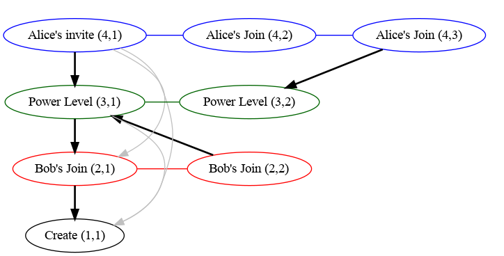

Auth Chain Difference Algorithm
The auth chain difference algorithm is used by V2 state resolution, where a naive implementation can be a significant source of CPU and DB usage.
Definitions
A state set is a set of state events; e.g. the input of a state resolution algorithm is a collection of state sets.
The auth chain of a set of events are all the events' auth events and their auth events, recursively (i.e. the events reachable by walking the graph induced by an event's auth events links).
The auth chain difference of a collection of state sets is the union minus the intersection of the sets of auth chains corresponding to the state sets, i.e an event is in the auth chain difference if it is reachable by walking the auth event graph from at least one of the state sets but not from all of the state sets.
Breadth First Walk Algorithm
A way of calculating the auth chain difference without calculating the full auth chains for each state set is to do a parallel breadth first walk (ordered by depth) of each state set's auth chain. By tracking which events are reachable from each state set we can finish early if every pending event is reachable from every state set.
This can work well for state sets that have a small auth chain difference, but can be very inefficient for larger differences. However, this algorithm is still used if we don't have a chain cover index for the room (e.g. because we're in the process of indexing it).
Chain Cover Index
Synapse computes auth chain differences by pre-computing a "chain cover" index
for the auth chain in a room, allowing efficient reachability queries like "is
event A in the auth chain of event B". This is done by assigning every event a
chain ID and sequence number (e.g. (5,3)), and having a map of links
between chains (e.g. (5,3) -> (2,4)) such that A is reachable by B (i.e. A
is in the auth chain of B) if and only if either:
- A and B have the same chain ID and
A's sequence number is less thanB's sequence number; or - there is a link
LbetweenB's chain ID andA's chain ID such thatL.start_seq_no<=B.seq_noandA.seq_no<=L.end_seq_no.
There are actually two potential implementations, one where we store links from
each chain to every other reachable chain (the transitive closure of the links
graph), and one where we remove redundant links (the transitive reduction of the
links graph) e.g. if we have chains C3 -> C2 -> C1 then the link C3 -> C1
would not be stored. Synapse uses the former implementations so that it doesn't
need to recurse to test reachability between chains.
Example
An example auth graph would look like the following, where chains have been
formed based on type/state_key and are denoted by colour and are labelled with
(chain ID, sequence number). Links are denoted by the arrows (links in grey
are those that would be remove in the second implementation described above).

Note that we don't include all links between events and their auth events, as most of those links would be redundant. For example, all events point to the create event, but each chain only needs the one link from it's base to the create event.
Using the Index
This index can be used to calculate the auth chain difference of the state sets by looking at the chain ID and sequence numbers reachable from each state set:
- For every state set lookup the chain ID/sequence numbers of each state event
- Use the index to find all chains and the maximum sequence number reachable from each state set.
- The auth chain difference is then all events in each chain that have sequence numbers between the maximum sequence number reachable from any state set and the minimum reachable by all state sets (if any).
Note that steps 2 is effectively calculating the auth chain for each state set (in terms of chain IDs and sequence numbers), and step 3 is calculating the difference between the union and intersection of the auth chains.
Worked Example
For example, given the above graph, we can calculate the difference between state sets consisting of:
S1: Alice's invite(4,1)and Bob's second join(2,2); andS2: Alice's second join(4,3)and Bob's first join(2,1).
Using the index we see that the following auth chains are reachable from each state set:
S1:(1,1),(2,2),(3,1)&(4,1)S2:(1,1),(2,1),(3,2)&(4,3)
And so, for each the ranges that are in the auth chain difference:
- Chain 1: None, (since everything can reach the create event).
- Chain 2: The range
(1, 2](i.e. just2), as1is reachable by all state sets and the maximum reachable is2(corresponding to Bob's second join). - Chain 3: Similarly the range
(1, 2](corresponding to the second power level). - Chain 4: The range
(1, 3](corresponding to both of Alice's joins).
So the final result is: Bob's second join (2,2), the second power level
(3,2) and both of Alice's joins (4,2) & (4,3).